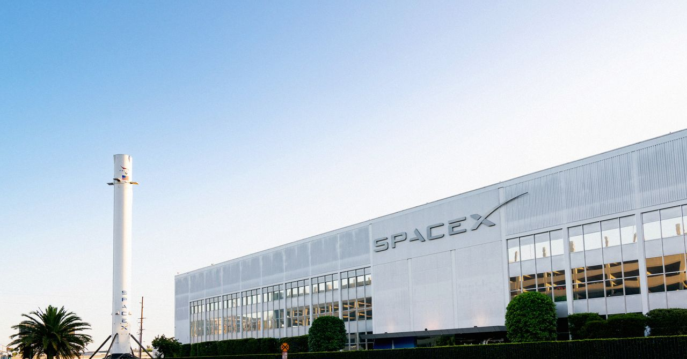
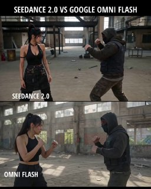
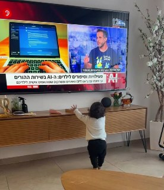
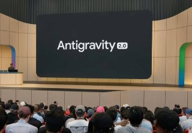
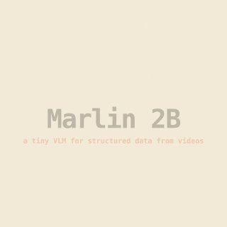
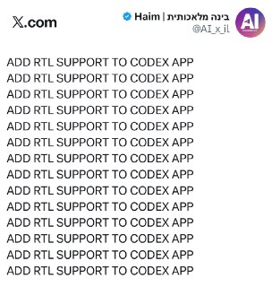

Calcalist Techנמוכה21.05.2026, 07:24
OpenAI עשויה להגיש ביום שישי תשקיף חסוי לקראת הנפקה בניו יורק, לפי דיווחים, עם אפשרות ליציאה לשוק כבר בספטמבר.
אימות 1
OpenAI עשויה להגיש ביום שישי תשקיף חסוי לקראת הנפקה בניו יורק, לפי דיווחים, עם אפשרות ליציאה לשוק כבר בספטמבר.

The long-awaited documents SpaceX filed with US regulators Wednesday included details about a lucrative deal to lend GPUs to a major AI rival.
גוגל הכריזה על Gemini Spark, סוכן אישי מבוסס Gemini 3.5 שאמור לעבוד ברקע לאורך זמן ולרוץ על מכונות ייעודיות ב-Google Cloud. המשמעות: ביצוע משימות ממושכות בלי להשאיר מחשב פתוח.

בית המשפט דחה את תביעת מאסק נגד אלטמן מטעמי התיישנות, ולא קבע שאלטמן פעל בהוגנות בהפיכת OpenAI למסחרית.

למרות ההבטחות של גוגל סביב Gemini Omni Flash, הדירוגים והתגובות הראשונות מציבים את Seedance 2.0 של ByteDance לפניו באיכות יצירת וידאו.

גוגל מתחילה להפיץ עיצוב חדש לג׳מיני באפליקציה ובווב, עם בורר מודלים מעודכן שמרמז גם על Gemini 3.5. במקביל, אפליקציית AI Studio הופיעה בחנות האנדרואיד עם הרשמה מוקדמת.

מודל Gemma 4 הופך עכשיו למהיר פי 3 🚀. המערכת משתמשת כעת במנגנון חדש המאפשר למודל לחזות מספר טוקנים במקביל, במקום לייצר אותם אחד-אחד.

פרויקט Human Operator של MIT מציג אבטיפוס לביש שמחבר ראייה ממוחשבת, פקודות קוליות וגירוי שרירים חשמלי כדי להנחות פיזית את יד המשתמש בזמן אמת. הוא נבנה בהאקתון של 48 שעות וזכה במקום הראשון, עם הדגמות כמו ציור ונגינה בפסנתר.

שמח לשתף שהתחלתי להגיש את ״פינת ה-AI״ במהדורת היום של חדשות 12 עם עמליה דואק ועופר חדד! מדי חמישי ניפגש על המסך (בלי נדר בעזרת השם) - ונדבר על יוז קייסים פרקטיים וכיפיים - שמתאימים לכל אחת ואחת!
משתמש מתאר כיצד קלוד סייע להפוך עיצוב חריטה שנוצר ב-AI לקובץ מתאים לתוכנת צורפות, וחסך לדבריו שעות של עבודה ידנית אצל הצורף.

Google הציגה את Antigravity 2.0 עם סוכני־משנה שפועלים במקביל, יכולות מחקר וכתיבת קוד, אינטגרציות ל-Nano Banana ולכלים נוספים, וגם CLI חדש בסגנון Claude Code.

NemoStation פתחה את Marlin-2B, מודל וידאו קומפקטי לחילוץ מידע מובנה מסרטונים: הוא מתאר סצנות ואירועים ב-JSON עם חותמות זמן, או מאתר רגעים לפי שאילתה טבעית.

פינת ה-AI השבועית מציגה דרכים פרקטיות שבהן הורים יכולים להשתמש בבינה מלאכותית לחיזוק מיומנויות אצל ילדים, מסיפורי השלכה ומשחקים ועד חוברות תרגול, צביעה וספרי ילדים.
גוגל מציגה שדרוג נרחב לחיפוש עם שילוב עמוק יותר של Gemini 3.5 Flash: תמיכה בהעלאת קבצים וסרטונים, השלמת שאילתות, יצירת ווידג'טים להסבר נושאים מורכבים וסוכני AI שיוכלו לעקוב אחרי אירועים ולהתריע על עדכונים.
הפוסט מציג טענת "חינם", אבל בלי אימות ברור מול המוצר הרשמי, ולכן צריך לראות בזה טענה שדורשת בדיקה.

נראה שנקבל גם מודל חדש מגוגל - Gemini 3.5 👀 הלכתי להכין את המפה... בינה מלאכותית בטלגרם - t.me/AI_tg_il

סידאנס מאפשר לשלב וידאו, תמונות ואודיו כקלט ליצירת סרטון חדש בעזרת AI. בדוגמה הוזן סרטון רחפן אמיתי לצד תמונת צ׳יטה, והמערכת שילבה אותה רצה בתוך הווידאו באמצעות reference to video, בין היתר דרך fal.ai.

תנועה מרשימות בקוד פתוח. המודל מתאים במיוחד למי שמחפש אלטרנטיבה חזקה וגמישה ליצירת סרטוני AI ישירות מהמחשב (לבעלי כרטיסי מסך חזקים 😉). 🔗 קישור למודל ב-Hugging Face:

הפוסט מציג טענת "חינם", אבל בלי אימות ברור מול המוצר הרשמי, ולכן צריך לראות בזה טענה שדורשת בדיקה.

הפוסט מציג טענת "חינם", אבל בלי אימות ברור מול המוצר הרשמי, ולכן צריך לראות בזה טענה שדורשת בדיקה.

דמיינו להיות האדם הכי עשיר בתבל, המגנומטר מצפצף, ואתם צריכים להוריד את החגורה ולעבור שוב. אלון מאסק היום 👆 מגיע לבית המשפט לתביעה נגד סם אלטמן.

בפיד נטען שמגבלות השימוש ב־Grok Build מחמירות אפילו יותר מאלה של Claude Code, אף שמדובר במנוי יקר של 300 דולר; הפוסט מבקש סיוע בהפצה ברשת X.

הפוסט מציג טענת "חינם", אבל בלי אימות ברור מול המוצר הרשמי, ולכן צריך לראות בזה טענה שדורשת בדיקה.

גוגל הציגה מאיץ חדש ל-Gemma 4 שמייצר טוקנים במקביל בעזרת מודל קטן נוסף, ומדווחת על שיפור מהירות של עד פי 3. כרגע אין עדיין גרסה ל-LM Studio.
אל"מ מאיר בידרמן, שמונה למח"ט 401 לאחר נפילת קודמו אל"מ אחסאן דקסה בג'באליה, נפצע קשה מפגיעת רחפן נפץ בדרום לבנון. בתקרית נפצע גם סא"ל במילואים באורח בינוני.

בישראל מעריכים שגם אם המגעים בין ארה"ב לאיראן יתקדמו, האיום לא יוסר בלי תקיפה נוספת נגד יכולות הטילים הבליסטיים. בכיר ביטחוני מזהיר שכל עוד המשטר האיראני נשאר על כנו, צפויים סבבי לחימה חוזרים ואף תכופים.
הניסוח הזהיר יותר הוא: כתבה אנושית על מילואימניקים בכירים שהפכו לאבות תוך כדי שירות ממושך במלחמה, ונעים בין אחריות בשטח למשפחה שנשארת בעורף.
הטור מציג את שאיפת ליברמן לראשות הממשלה כביטוי לתקדים שיצרו בנט ולפיד: האפשרות שמנהיג מפלגה לא גדולה יעמוד בראש הממשלה דרך מיקוח גושי.

באיראן דווח כי ארה"ב העבירה הצעה חדשה - לאחר שטראמפ דחה "ברגע האחרון" את חידוש התקיפות, אך הורה לצבא להישאר מוכן ל"מתקפה רחבה".
SpaceX recorded a $112 million unrealized loss on its holdings last year. In 2024, the company notched a $955 million gain on paper from holding the digital asset. For years, Musk had fostered a reputation for being one of Dogecoin ’s biggest cheerleaders.

Nuremberg, Germany, 19th May 2026, Chainwire

Two papers published this week have reignited debates about the risk posed by “Q-day” to the cryptography that underpins digital assets.
At a conference dedicated to the riskiest traders in finance, Miami's crypto scene appeared far different than during its pandemic-era boom.

Explainers Technology Guides 4 min read Matt Hussey Your gateway into the world of Web3 Partner News Deep Dives University Coins s News Explorer About Team Disclosures Manifesto Terms of Service Code of Conduct Privacy Policy

אחרי עוד תיקו מאכזב מול הפועל פ"ת ולעיני יציעים דלילים, במכבי חיפה מודים שהשילוב של צעירים לא מספיק ושנדרש שינוי משמעותי, בעיקר בסגל הזרים.